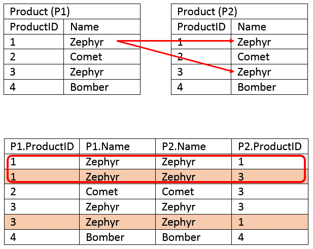

| body_wt | brain_wt | |
|---|---|---|
| species | ||
| Africanelephant | 6654.0 | 5712.0 |
| Africangiantpouchedrat | 1.0 | 6.6 |
Tidy data
PSTAT100 Spring 2023
Invalid Date
Announcements
- PDF export fixed on JupyterHub
- Lab 0 due today 11:59PM; late submissions allowed until Wednesday 11:59PM
- Complete Q1-Q4 (
fruit_infosection) of Lab 1 before section
This week
- Tabular data
- Many ways to structure a dataset
- Few organizational constraints ‘in the wild’
- Principles of tidy data: matching semantics with structure
- Data semantics: observations and variables
- Tabular structure: rows and columns
- The tidy standard
- Common messes
- Tidying operations
- Transforming data frames
- Subsetting (slicing and filtering)
- Derived variables
- Aggregation and summary statistics
Tabular data
- Many possible layouts for tabular data
- ‘Real’ datasets have few organizational constraints
Most data are stored in tables, but there are always multiple possible tabular layouts for the same underlying data.
Let’s look at some examples.
Mammal data: long layouts
Below is the Allison 1976 mammal brain-body weight dataset from last time shown in two ‘long’ layouts:
| measurement | weight | |
|---|---|---|
| species | ||
| Africanelephant | brain_wt | 5712.0 |
| Africanelephant | body_wt | 6654.0 |
| Africangiantpouchedrat | brain_wt | 6.6 |
| Africangiantpouchedrat | body_wt | 1.0 |
Mammal data: wide layout
Here’s a third possible layout for the mammal brain-body weight data:
| species | Africanelephant | Africangiantpouchedrat | ArcticFox | Arcticgroundsquirrel |
|---|---|---|---|---|
| measurement | ||||
| body_wt | 6654.0 | 1.0 | 3.385 | 0.92 |
| brain_wt | 5712.0 | 6.6 | 44.500 | 5.70 |
GDP growth data: wide layout
Here’s another example: World Bank data on annual GDP growth for 264 countries from 1961 – 2019.
| Country Name | Country Code | 2009 | 2010 | 2011 | |
|---|---|---|---|---|---|
| 0 | Aruba | ABW | -10.519749 | -3.685029 | 3.446055 |
| 1 | Afghanistan | AFG | 21.390528 | 14.362441 | 0.426355 |
| 2 | Angola | AGO | 0.858713 | 4.403933 | 3.471976 |
| 3 | Albania | ALB | 3.350067 | 3.706892 | 2.545322 |
| 4 | Andorra | AND | -5.302847 | -1.974958 | -0.008070 |
GDP growth data: long layout
Here’s an alternative layout for the annual GDP growth data:
| year | growth_pct | |
|---|---|---|
| Country Name | ||
| Afghanistan | 2009 | 21.390528 |
| Aruba | 2009 | -10.519749 |
| Afghanistan | 2010 | 14.362441 |
| Aruba | 2010 | -3.685029 |
| Afghanistan | 2011 | 0.426355 |
| Aruba | 2011 | 3.446055 |
SB weather data: long layouts
A third example: daily minimum and maximum temperatures recorded at Santa Barbara Municipal Airport from January 2021 through March 2021.
| STATION | TMAX | TMIN | MONTH | DAY | YEAR | |
|---|---|---|---|---|---|---|
| 0 | USW00023190 | 65 | 37 | 1 | 1 | 2021 |
| 1 | USW00023190 | 62 | 38 | 1 | 2 | 2021 |
| 2 | USW00023190 | 60 | 42 | 1 | 3 | 2021 |
SB weather data: wide layout
Here’s a wide layout for the SB weather data:
| DAY | 1 | 2 | 3 | 4 | |
|---|---|---|---|---|---|
| MONTH | type | ||||
| 1 | TMAX | 65.0 | 62.0 | 60.0 | 72.0 |
| TMIN | 37.0 | 38.0 | 42.0 | 43.0 | |
| 2 | TMAX | 66.0 | 67.0 | 69.0 | 63.0 |
| TMIN | 45.0 | 40.0 | 44.0 | 37.0 | |
| 3 | TMAX | 68.0 | 66.0 | 59.0 | 62.0 |
UN development data: multiple tables
A final example: United Nations country development data organized into different tables according to variable type.
Here is a table of population measurements:
| total_pop | urban_pct_pop | pop_under5 | pop_15to64 | pop_over65 | |
|---|---|---|---|---|---|
| country | |||||
| Afghanistan | 38.0 | 25.8 | 5.6 | 20.9 | 1.0 |
| Albania | 2.9 | 61.2 | 0.2 | 2.0 | 0.4 |
And here is a table of a few gender-related variables:
| gender_inequality | parliament_pct_women | labor_participation_women | labor_participation_men | |
|---|---|---|---|---|
| country | ||||
| Norway | 0.045 | 40.8 | 60.4 | 67.2 |
| Ireland | 0.093 | 24.3 | 56.0 | 68.4 |
UN development data: one table
Here are both tables merged by country:
| total_pop | urban_pct_pop | pop_under5 | pop_15to64 | pop_over65 | gender_inequality | parliament_pct_women | labor_participation_women | labor_participation_men | |
|---|---|---|---|---|---|---|---|---|---|
| country | |||||||||
| Afghanistan | 38.0 | 25.8 | 5.6 | 20.9 | 1.0 | 0.655 | 27.2 | 21.6 | 74.7 |
| Albania | 2.9 | 61.2 | 0.2 | 2.0 | 0.4 | 0.181 | 29.5 | 46.7 | 64.6 |
| Algeria | 43.1 | 73.2 | 5.0 | 27.1 | 2.8 | 0.429 | 21.5 | 14.6 | 67.4 |
UN development data: one (longer) table
And here is another arrangement of the merged table:
| gender_variable | gender_value | population_variable | population_value | |
|---|---|---|---|---|
| country | ||||
| Afghanistan | gender_inequality | 0.655 | total_pop | 38.0 |
| Albania | gender_inequality | 0.181 | total_pop | 2.9 |
| Algeria | gender_inequality | 0.429 | total_pop | 43.1 |
| Andorra | gender_inequality | NaN | total_pop | 0.1 |
| Angola | gender_inequality | 0.536 | total_pop | 31.8 |
What are the differences?
In short, the alternate layouts differ in three respects:
- Rows
- Columns
- Number of tables
How to choose?
Return to one of the examples and review the different layouts with your neighbor.
- List a few advantages and disadvantages for each layout.
- Which do you prefer and why?
Few organizational constraints
It’s surprisingly difficult to articulate reasons why one layout might be preferable to another.
- Usually the choice of layout isn’t principled
- Idiosyncratic: two people are likely to make different choices
As a result:
- Few widely used conventions
- Lots of variability ‘in the wild’
- Datasets are often organized in bizarre ways
Form and representation
Because of the wide range of possible layouts for a dataset, and the variety of choices that are made about how to store data, data scientists are constantly faced with determining how best to reorganize datasets in a way that facilitates exploration and analysis.
Broadly, this involves two interdependent choices:
- Choice of representation: how to encode information.
- Example: parse dates as ‘MM/DD/YYYY’ (one variable) or ‘MM’, ‘DD’, ‘YYYY’ (three variables)?
- Example: use values 1, 2, 3 or ‘low’, ‘med’, ‘high’?
- Example: name variables ‘question1’, ‘question2’, …, or ‘age’, ‘income’, …?
- Choice of form: how to display information
- Example: wide table or long table?
- Example: one table or many?
Tidy data
The tidy data standard is a principled way of organizing tabular data. It has two main advantages:
- Facilitates workflow by establishing a consistent dataset structure.
- Principles are designed to make transformation, exploration, visualization, and modeling easy.
Semantics and structure
“Tidying your data means storing it in a consistent form that matches the semantics of the dataset with the way it is stored.” Wickham and Grolemund, R for Data Science, 2017.
A dataset is a collection of values.
the semantics of a dataset are the meanings of the values
the structure of a dataset is the arrangement of the values
Data semantics
To introduce some general vocabulary, each value in a dataset is
- an observation
- of a variable
- taken on an observational unit.
Units, variables, and observations
| total_pop | urban_pct_pop | |
|---|---|---|
| country | ||
| Afghanistan | 38.0 | 25.8 |
| Albania | 2.9 | 61.2 |
- An observational unit is the entity measured.
- Above, country
- A variable is an attribute measured on each unit.
- Above, total population and urban percentage
- An observation is a collection of measurements taken on one unit.
- Above, 38.0 and 25.8
Identifying units, variables, and observations
Let’s do an example. Here’s one record from the GDP growth data:
| year | growth_pct | |
|---|---|---|
| Country Name | ||
| Afghanistan | 2010 | 14.362441 |
Above, the values -13.605441 and 1961 are observations of the variables GDP growth and year recorded for the observational unit Algeria.
Your turn
What are the units, variables and observations?
| DAY | 1 | 2 | 3 | 4 | |
|---|---|---|---|---|---|
| MONTH | type | ||||
| 1 | TMAX | 65.0 | 62.0 | 60.0 | 72.0 |
| TMIN | 37.0 | 38.0 | 42.0 | 43.0 | |
| 2 | TMAX | 66.0 | 67.0 | 69.0 | 63.0 |
| TMIN | 45.0 | 40.0 | 44.0 | 37.0 |
Think about it, then confer with your neighbor.
Data structure
Data structure refers to the form in which it is stored.
Tabular data is arranged in rows and columns.
As we saw, there are multiple structures – arrangements of rows and columns – available to represent any dataset.
The tidy standard
The tidy standard consists in matching semantics and structure. A dataset is tidy if:
- Each variable is a column.
- Each observation is a row.
- Each table contains measurements on only one type of observational unit.

Tidy data.
Tidy or messy?
Let’s revisit some of our examples of multiple layouts.
| Country Name | Country Code | 2009 | 2010 | 2011 | |
|---|---|---|---|---|---|
| 0 | Aruba | ABW | -10.519749 | -3.685029 | 3.446055 |
| 1 | Afghanistan | AFG | 21.390528 | 14.362441 | 0.426355 |
| 2 | Angola | AGO | 0.858713 | 4.403933 | 3.471976 |
We can compare the semantics and structure for alignment:
| Semantics | Structure | ||
|---|---|---|---|
| Observations | Annual records | Rows | Countries |
| Variables | GDP growth and year | Columns | Value of year |
| Observational units | Countries | Tables | Just one |
Rules 1 and 2 are violated, since column names are values (of year), not variables. Not tidy.
Tidy or messy?
| year | growth_pct | |
|---|---|---|
| Country Name | ||
| Afghanistan | 2009 | 21.390528 |
| Aruba | 2009 | -10.519749 |
| Afghanistan | 2010 | 14.362441 |
| Aruba | 2010 | -3.685029 |
Comparison of semantics and structure:
| Semantics | Structure | ||
|---|---|---|---|
| Observations | Annual records | Rows | Annual records |
| Variables | GDP growth and year | Columns | GDP growth and year |
| Observational units | Countries | Tables | Just one |
All three rules are met: rows are observations, columns are variables, and there’s one unit type and one table. Tidy.
Tidy or messy?
| STATION | TMAX | TMIN | MONTH | DAY | YEAR | |
|---|---|---|---|---|---|---|
| 0 | USW00023190 | 65 | 37 | 1 | 1 | 2021 |
| 1 | USW00023190 | 62 | 38 | 1 | 2 | 2021 |
| 2 | USW00023190 | 60 | 42 | 1 | 3 | 2021 |
Try this one on your own. Then compare with your neighbor.
- Identify the observations and variables
- What are the observational units?
Tidy or messy?
In undev1 and undev2:
| total_pop | urban_pct_pop | pop_under5 | pop_15to64 | pop_over65 | |
|---|---|---|---|---|---|
| country | |||||
| Afghanistan | 38.0 | 25.8 | 5.6 | 20.9 | 1.0 |
| Albania | 2.9 | 61.2 | 0.2 | 2.0 | 0.4 |
| gender_inequality | parliament_pct_women | labor_participation_women | labor_participation_men | |
|---|---|---|---|---|
| country | ||||
| Norway | 0.045 | 40.8 | 60.4 | 67.2 |
| Ireland | 0.093 | 24.3 | 56.0 | 68.4 |
Here there are multiple tables. To discuss:
- Are the observational units the same or different?
- Based on your answer above, is the data tidy or not?
Common messes
“Well, here’s another nice mess you’ve gotten me into” – Oliver Hardy
These examples illustrate some common messes:
- Columns are values, not variables
- GDP data: columns are 1961, 1962, …
- Multiple variables are stored in one column
- Mammal data: weight column contains both body and brain weights
- Variables or values are stored in rows and columns
- Weather data: date values are stored in rows and columns, each column contains both min and max temperatures
- Measurements on one type of observational unit are divided into multiple tables.
- UN development data: one table for population statistics and a separate table for gender statistics.
Tidying operations
These common messes can be cleaned up by some simple operations:
- melt
- reshape a dataframe from wide to long format
- pivot
- reshape a dataframe from long to wide format
- merge
- combine two dataframes row-wise by matching the values of certain columns
Melt
Melting resolves the problem of having values stored as columns (common mess 1).

Melt
| Country Name | Country Code | 1961 | 1962 | 1963 | 1964 | 1965 | 1966 | 1967 | 1968 | ... | 2010 | 2011 | 2012 | 2013 | 2014 | 2015 | 2016 | 2017 | 2018 | 2019 | |
|---|---|---|---|---|---|---|---|---|---|---|---|---|---|---|---|---|---|---|---|---|---|
| 0 | Aruba | ABW | NaN | NaN | NaN | NaN | NaN | NaN | NaN | NaN | ... | -3.685029 | 3.446055 | -1.369863 | 4.198232 | 0.300000 | 5.700001 | 2.100000 | 1.999999 | NaN | NaN |
| 1 | Afghanistan | AFG | NaN | NaN | NaN | NaN | NaN | NaN | NaN | NaN | ... | 14.362441 | 0.426355 | 12.752287 | 5.600745 | 2.724543 | 1.451315 | 2.260314 | 2.647003 | 1.189228 | 3.911603 |
2 rows × 61 columns
# in pandas
gdp1.melt(
id_vars = ['Country Name', 'Country Code'], # which variables do you want to retain for each row? .
var_name = 'Year', # what do you want to name the variable that will contain the column names?
value_name = 'GDP Growth', # what do you want to name the variable that will contain the values?
).head(2)| Country Name | Country Code | Year | GDP Growth | |
|---|---|---|---|---|
| 0 | Aruba | ABW | 1961 | NaN |
| 1 | Afghanistan | AFG | 1961 | NaN |
Pivot
Pivoting resolves the issue of having multiple variables stored in one column (common mess 2). It’s the inverse operation of melting.

Pivot
| measurement | weight | |
|---|---|---|
| species | ||
| Africanelephant | brain_wt | 5712.0 |
| Africanelephant | body_wt | 6654.0 |
| Africangiantpouchedrat | brain_wt | 6.6 |
| Africangiantpouchedrat | body_wt | 1.0 |
# in pandas
mammal2.pivot(
columns = 'measurement', # which variable(s) do you want to send to new column names?
values = 'weight' # which variable(s) do you want to use to populate the new columns?
).head(2)| measurement | body_wt | brain_wt |
|---|---|---|
| species | ||
| Africanelephant | 6654.0 | 5712.0 |
| Africangiantpouchedrat | 1.0 | 6.6 |
Pivot and melt
Common mess 3 is a combination of messes 1 and 2: values or variables are stored in both rows and columns. Pivoting and melting in sequence can usually fix this.
| DAY | 1 | 2 | 3 | 4 | 5 | 6 | 7 | 8 | 9 | 10 | ... | 22 | 23 | 24 | 25 | 26 | 27 | 28 | 29 | 30 | 31 | |
|---|---|---|---|---|---|---|---|---|---|---|---|---|---|---|---|---|---|---|---|---|---|---|
| MONTH | type | |||||||||||||||||||||
| 1 | TMAX | 65.0 | 62.0 | 60.0 | 72.0 | 61.0 | 71.0 | 73.0 | 79.0 | 71.0 | 67.0 | ... | 61.0 | 59.0 | 65.0 | 55.0 | 57.0 | 54.0 | 55.0 | 55.0 | 58.0 | 63.0 |
| TMIN | 37.0 | 38.0 | 42.0 | 43.0 | 40.0 | 39.0 | 38.0 | 36.0 | 39.0 | 37.0 | ... | 41.0 | 40.0 | 38.0 | 44.0 | 40.0 | 48.0 | 49.0 | 42.0 | 37.0 | 37.0 | |
| 2 | TMAX | 66.0 | 67.0 | 69.0 | 63.0 | 66.0 | 68.0 | 60.0 | 57.0 | 59.0 | 61.0 | ... | 75.0 | 75.0 | 70.0 | 66.0 | 69.0 | 76.0 | 68.0 | NaN | NaN | NaN |
| TMIN | 45.0 | 40.0 | 44.0 | 37.0 | 38.0 | 38.0 | 38.0 | 49.0 | 49.0 | 41.0 | ... | 37.0 | 39.0 | 41.0 | 39.0 | 36.0 | 43.0 | 38.0 | NaN | NaN | NaN | |
| 3 | TMAX | 68.0 | 66.0 | 59.0 | 62.0 | 67.0 | 69.0 | 60.0 | 69.0 | 65.0 | 58.0 | ... | 71.0 | 72.0 | 67.0 | 65.0 | 63.0 | 72.0 | 73.0 | 77.0 | NaN | NaN |
| TMIN | 37.0 | 36.0 | 36.0 | 37.0 | 39.0 | 43.0 | 47.0 | 47.0 | 47.0 | 43.0 | ... | 50.0 | 49.0 | 41.0 | 44.0 | 40.0 | 41.0 | 41.0 | 42.0 | NaN | NaN |
6 rows × 31 columns
Pivot and melt
weather3.melt(
ignore_index = False,
var_name = 'day',
value_name = 'temp'
).reset_index().pivot(
index = ['MONTH', 'day'],
columns = 'type',
values = 'temp'
).reset_index().rename_axis(columns = {'type': ''}).head()| MONTH | day | TMAX | TMIN | |
|---|---|---|---|---|
| 0 | 1 | 1 | 65.0 | 37.0 |
| 1 | 1 | 2 | 62.0 | 38.0 |
| 2 | 1 | 3 | 60.0 | 42.0 |
| 3 | 1 | 4 | 72.0 | 43.0 |
| 4 | 1 | 5 | 61.0 | 40.0 |
Merge
Merging resolves the issue of storing observations or variables on one unit type in multiple tables (mess 4). The basic idea is to combine by matching rows.
Merge
The code below combines columns in each table by matching rows based on country.
| total_pop | urban_pct_pop | pop_under5 | pop_15to64 | pop_over65 | gender_inequality | parliament_pct_women | labor_participation_women | labor_participation_men | |
|---|---|---|---|---|---|---|---|---|---|
| country | |||||||||
| Afghanistan | 38.0 | 25.8 | 5.6 | 20.9 | 1.0 | 0.655 | 27.2 | 21.6 | 74.7 |
| Albania | 2.9 | 61.2 | 0.2 | 2.0 | 0.4 | 0.181 | 29.5 | 46.7 | 64.6 |
| Algeria | 43.1 | 73.2 | 5.0 | 27.1 | 2.8 | 0.429 | 21.5 | 14.6 | 67.4 |
| Andorra | 0.1 | 88.0 | NaN | NaN | NaN | NaN | 46.4 | NaN | NaN |
Merge
There are various rules for exactly how to merge, but the general syntactical procedure to merge dataframes df1 and df2 is this.
Specify an order:
merge(df1, df2)ormerge(df2, df1).Specify keys: the shared columns to use for matching rows of
df1with rows ofdf2.- for example, merging on
datewill align rows indf2with rows ofdf1that have the same value fordate
- for example, merging on
Specify a rule for which rows to return after merging
- keep all rows with key entries in
df1, drop non-matching rows indf2(‘left’ join) - keep all rows with key entries in
df2drop non-matching rows indf1(‘right’ join) - keep all rows with key entries in either
df1ordf2, inducing missing values (‘outer’ join) - keep all rows with key entries in both
df1anddf2(‘inner’ join)
- keep all rows with key entries in
Next time
Transformations of tabular data
- Slicing and filtering
- Defining new variables
- Vectorized operatioons
- Aggregation and grouping